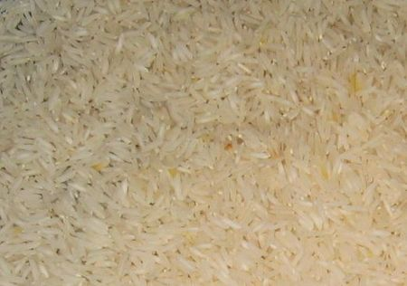
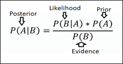
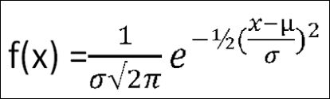
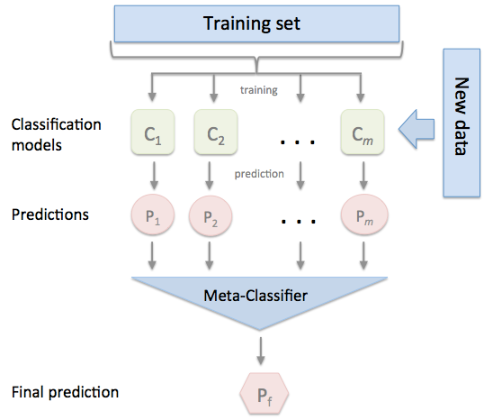

GAUSSSIAN NAIVE BAYES CLASSIFICATION FOR PREDICTION ON RICE (OSMANCIK AND CAMMEO)#
Beras merupakan salah satu sumber karbohidrat utama bagi sebagian besar populasi di dunia, termasuk di Indonesia. Dalam beberapa tahun terakhir, permintaan akan beras jenis tertentu yang memiliki kualitas dan karakteristik yang unggul semakin meningkat. Dua jenis beras yang sedang populer dan diminati adalah beras Osmancik dan beras Cameo.
Beras Osmancik berasal dari Turki dan dikenal memiliki biji yang panjang, aroma yang harum, serta kualitas yang sangat baik. Beras ini memiliki daya serap air yang rendah sehingga hasil masaknya lebih pulen dan tidak lengket. Karena kualitasnya yang baik, beras Osmancik sering digunakan untuk sajian khusus dan dianggap sebagai beras premium.
Beras Cameo juga merupakan beras berkualitas tinggi yang berasal dari Italia. Beras ini memiliki biji yang panjang dan ramping dengan warna putih bersih. Karakteristiknya yang unggul antara lain tekstur yang lembut, rasa yang enak, serta mudah diolah menjadi berbagai hidangan. Beras Cameo sering digunakan untuk membuat risotto, hidangan khas Italia yang terkenal.
TUJUAN#
Percobaan klasifikasi beras Osmancik dan Cameo bertujuan untuk mengidentifikasi dan membedakan antara kedua jenis beras ini berdasarkan karakteristik fisiknya. Metode klasifikasi yang umum digunakan adalah analisis citra digital menggunakan teknik pengolahan citra dan pembelajaran mesin. Dengan melakukan percobaan ini, diharapkan dapat membantu dalam pengembangan sistem identifikasi beras yang cepat, akurat, dan otomatis. dianggap sebagai beras premium.
import pandas as pd
import numpy as np
import joblib
import seaborn as sns
from matplotlib import pyplot as plt
from sklearn.neighbors import LocalOutlierFactor
from sklearn.model_selection import train_test_split
from sklearn.naive_bayes import GaussianNB
from sklearn.neighbors import KNeighborsClassifier
from sklearn.ensemble import StackingClassifier #
DATA UNDERSTANDING#
Data Understanding atau memahami data adalah sebuah tahapan di dalam metodologi sains data dan pengembangan AI yang bertujuan untuk mendapatkan pemahaman awal mengenai data yang dibutuhkan untuk memecahkan permasalahan yang diberikan. Pada case kali ini kita akan memahami Dataset Rice (Cammeo and Osmancik).
MENGUMPULKAN DATA#
Mencari Data#
Tahapan pertama pada mengumpulkan data adalah dengan mencari dataset yang akan kita gunakan, sesuai penjelasan di atas kita akan menggunakan Dataset Rice (Cammeo and Osmancik) yang bersumber dari:
https://archive.ics.uci.edu/dataset/545/rice+cammeo+and+osmancik
Menarik Data#
Setelah kita mendapatkan data yang sesuai, selanjutnya kita upload data tersebut ke drive atau database yang kita miliki. Kemudian kami integrasikan dataset tersebut ke notebooks yang kami gunakan dengan tujuan akan memudahkan akses sesama anggota kelompok.
df = pd.read_excel('Rice_Cammeo_Osmancik.xlsx')
df
| Area | Perimeter | Major_Axis_Length | Minor_Axis_Length | Eccentricity | Convex_Area | Extent | Class | |
|---|---|---|---|---|---|---|---|---|
| 0 | 15231 | 525.578979 | 229.749878 | 85.093788 | 0.928882 | 15617 | 0.572896 | Cammeo |
| 1 | 14656 | 494.311005 | 206.020065 | 91.730972 | 0.895405 | 15072 | 0.615436 | Cammeo |
| 2 | 14634 | 501.122009 | 214.106781 | 87.768288 | 0.912118 | 14954 | 0.693259 | Cammeo |
| 3 | 13176 | 458.342987 | 193.337387 | 87.448395 | 0.891861 | 13368 | 0.640669 | Cammeo |
| 4 | 14688 | 507.166992 | 211.743378 | 89.312454 | 0.906691 | 15262 | 0.646024 | Cammeo |
| ... | ... | ... | ... | ... | ... | ... | ... | ... |
| 3805 | 11441 | 415.858002 | 170.486771 | 85.756592 | 0.864280 | 11628 | 0.681012 | Osmancik |
| 3806 | 11625 | 421.390015 | 167.714798 | 89.462570 | 0.845850 | 11904 | 0.694279 | Osmancik |
| 3807 | 12437 | 442.498993 | 183.572922 | 86.801979 | 0.881144 | 12645 | 0.626739 | Osmancik |
| 3808 | 9882 | 392.296997 | 161.193985 | 78.210480 | 0.874406 | 10097 | 0.659064 | Osmancik |
| 3809 | 11434 | 404.709991 | 161.079269 | 90.868195 | 0.825692 | 11591 | 0.802949 | Osmancik |
3810 rows × 8 columns
Data di atas merupakan data yang akan kami gunakan selama pengerjaan kali ini.
MEMAHAMI DATA#
Deskripsi Data#
Rice atau dalam Bahasa Indonesia Beras, merupakan bagian bulir padi (gabah) yang telah dipisah dari sekam. Sekam (Jawa mêrang) secara anatomi disebut ‘palea’ (bagian yang ditutupi) dan ‘lemma’ (bagian yang menutupi). Pada salah satu tahap pemrosesan hasil panen padi, gabah ditumbuk dengan lesung (Jawa lumpang) atau digiling sehingga bagian luarnya (kulit gabah) terlepas dari isinya. Bagian isi inilah, yang berwarna putih, kemerahan, ungu, atau bahkan hitam, yang disebut beras.
Anatomi beras

Beras sendiri secara biologi adalah bagian biji padi yang terdiri dari
Aleuron, lapis terluar yang sering kali ikut terbuang dalam proses pemisahan kulit
Endosperma, tempat sebagian besar pati dan protein beras berada
Embrio, yang merupakan calon tanaman baru (dalam beras tidak dapat tumbuh lagi, kecuali dengan bantuan teknik kultur jaringan). Dalam bahasa sehari-hari, embrio disebut sebagai mata beras.
Di antara padi bersertifikat yang ditanam di TURKI, spesies Osmancik, yang memiliki areal tanam luas sejak tahun 1997 dan spesies Cammeo yang ditanam sejak tahun 2014. Oleh karena itu, pada pengerjaan kami kali ini hanya menggunakan 2 species saja.

Pada dataset yang kita miliki terdapat 3810 data numerik, 2180 di antaranya milik Osmancik dan 1630 milik Cammeo.
Penjelasan Fitur#
Sebanyak 3.810 gambar butiran beras diambil untuk kedua spesies tersebut, diproses dan dibuat kesimpulan fitur. Diperoleh 7 ciri morfologi untuk setiap butir beras.
Area (Integer, px, numerik)merupakan batas butir beras, fitur ini mengembalikan jumlah piksel dalam batas butir tiap berasnya.
Perimeter(float, px, numerik) merupakan fitur yang menampung keliling butiran beras yang di dapat dengan menghitung jarak antar piksel di sekitar batas butiran beras.
Major Axis Length(float, numerik) panjang sumbu utama merupakan garis terpanjang yang dapat digambar pada butiran beras, yaitu jarak sumbu utama.
Minor Axis Length(float, numerik) panjang sumbu kecil merupakan garis terpendek yang dapat digambar pada butiran beras, yaitu jarak sumbu kecil.
Eccentricity(float, numerik) mengukur seberapa bulat elips, yang mempunyai momen yang sama dengan butiran beras.
Convex Area(float, numerik) mengembalikan jumlah piksel cangkang cembung terkecil di wilayah yang dibentuk oleh butiran beras.
Extent(float, numerik ) mengembalikan rasio wilayah yang dibentuk oleh butiran beras terhadap piksel kotak pembatas
PLOTTING DATA#
Data Distribution#
Area Feature
df['Area'].plot(kind='hist', bins=20, title='Area')
plt.gca().spines[['top', 'right',]].set_visible(False)
Perimeter Feature
df['Perimeter'].plot(kind='hist', bins=20, title='Perimeter')
plt.gca().spines[['top', 'right',]].set_visible(False)
Major_Axis_Length Feature
df['Major_Axis_Length'].plot(kind='hist', bins=20, title='Major Axis')
plt.gca().spines[['top', 'right',]].set_visible(False)
Minor_Axis_Length Feature
df['Minor_Axis_Length'].plot(kind='hist', bins=20, title='Minor Axis')
plt.gca().spines[['top', 'right',]].set_visible(False)
Eccentricity Feature
df['Eccentricity'].plot(kind='hist', bins=20, title='Eccentrity')
plt.gca().spines[['top', 'right',]].set_visible(False)
Convex Area Feature
df['Convex_Area'].plot(kind='hist', bins=20, title='Convex Area')
plt.gca().spines[['top', 'right',]].set_visible(False)
Extent Feature
df['Extent'].plot(kind='hist', bins=20, title='Extent')
plt.gca().spines[['top', 'right',]].set_visible(False)
2D Distribution#
# Asumsi df af_outliersalah DataFrame Anda dengan kolom-kolom yang relevan
# Mengonversi kolom yang dipilih menjadi array numpy
X = df[['Area', 'Perimeter', 'Major_Axis_Length', 'Minor_Axis_Length', 'Eccentricity', 'Convex_Area', 'Extent']].values
# Menerapkan Local Outlier Factor
lof = LocalOutlierFactor(n_neighbors=3)
y_pred = lof.fit_predict(X)
# Menambahkan prediksi outlier ke DataFrame
df['Outlier'] = y_pred
# Menampilkan plot pasangan (pair plot)
pair_plot = sns.pairplot(df, hue='Outlier', palette={1: 'blue', -1: 'red'}, diag_kind='auto')
# Menambahkan judul
pair_plot.fig.suptitle('Visualisasi Outlier Menggunakan Local Outlier Factor (LOF)', y=1.02)
# Menampilkan plot
plt.show()
EKSPLORASI DATA#
df[['Area', 'Perimeter', 'Major_Axis_Length', 'Minor_Axis_Length', 'Eccentricity', 'Convex_Area', 'Extent']].describe()
| Area | Perimeter | Major_Axis_Length | Minor_Axis_Length | Eccentricity | Convex_Area | Extent | |
|---|---|---|---|---|---|---|---|
| count | 3810.000000 | 3810.000000 | 3810.000000 | 3810.000000 | 3810.000000 | 3810.000000 | 3810.000000 |
| mean | 12667.727559 | 454.239180 | 188.776222 | 86.313750 | 0.886871 | 12952.496850 | 0.661934 |
| std | 1732.367706 | 35.597081 | 17.448679 | 5.729817 | 0.020818 | 1776.972042 | 0.077239 |
| min | 7551.000000 | 359.100006 | 145.264465 | 59.532406 | 0.777233 | 7723.000000 | 0.497413 |
| 25% | 11370.500000 | 426.144753 | 174.353855 | 82.731695 | 0.872402 | 11626.250000 | 0.598862 |
| 50% | 12421.500000 | 448.852493 | 185.810059 | 86.434647 | 0.889050 | 12706.500000 | 0.645361 |
| 75% | 13950.000000 | 483.683746 | 203.550438 | 90.143677 | 0.902588 | 14284.000000 | 0.726562 |
| max | 18913.000000 | 548.445984 | 239.010498 | 107.542450 | 0.948007 | 19099.000000 | 0.861050 |
KUALITAS DATA#
Missing Value#
Missing value adalah informasi yang tidak tersedia untuk sebuah objek (kasus). Missing value terjadi karena informasi untuk sesuatu tentang objek tidak diberikan, sulit dicari, atau memang informasi tersebut tidak ada
Kita akan mengecek untuk kualitas data, apakah data tersebut memiliki missing value atau tidak.
df.isnull().sum()
Area 0
Perimeter 0
Major_Axis_Length 0
Minor_Axis_Length 0
Eccentricity 0
Convex_Area 0
Extent 0
Class 0
Outlier 0
dtype: int64
Pada data set yang kita gunakan kali ini, data tidak terdapat missing value.
Outlier Data#
Outlier adalah nilai yang jauh berbeda dari nilai lainnya dalam kumpulan data. Nilai ini muncul sebagai pengecualian dalam pola data yang ada.
Nilai yang ada di outlier bisa jauh lebih tinggi maupun lebih rendah dibandingkan dengan nilai-nilai lain dalam dataset. Outlier bisa terjadi karena berbagai alasan, termasuk kesalahan pengukuran, kejadian langka, atau karena faktor lain yang tidak terduga.
Mendeteksi outlier merupakan langkah penting dalam analisis data karena outlier memiliki dampak signifikan terhadap hasil analisis dan berpotensi menghasilkan kesimpulan yang tidak akurat.
Berikut beberapa alasan lain di balik pentingnya mendeteksi outlier:
Menghindari distorsi analisis
Memahami data dengan tepat
Memastikan analisis valid
Mendeteksi jika ada kesalahan atau kecurangan
Oleh karena itu, nantinya akan kita cek apakah ada data yang aneh atau tidak dengan menggunakan LOF (Local Outlier Factor)
DATA PREPROCESSING#
Local Outlier Factor#
Konsep Local Outlier Factor
Local Outlier Factor (LOF) adalah metode yang digunakan dalam analisis data untuk mengidentifikasi observasi yang dianggap sebagai outlier berdasarkan konteks lokal atau lingkungan mereka. LOF memberikan skor untuk setiap data berdasarkan seberapa “aneh” atau tidak biasa data tersebut dibandingkan dengan tetangga-tetangganya.
Berikut adalah konsep utama dari LOF:
Local Reachability Density (LRD): Local Reachability Density (LRD) adalah ukuran kepadatan lokal dari sebuah data. Ini menunjukkan seberapa dekat sebuah data dengan tetangganya dalam ruang fitur. LRD didefinisikan sebagai kebalikan dari jarak rata-rata antara sebuah data dan tetangganya dalam k-NN. Semakin kecil jarak rata-rata, semakin besar LRD.
Local Outlier Factor (LOF): Local Outlier Factor (LOF) adalah rasio dari LRD sebuah data terhadap LRD dari tetangga-tetangganya. Ini mengukur seberapa jauh sebuah data dari tetangganya dalam hal kepadatan. Data dengan LOF yang tinggi cenderung menjadi outlier karena mereka memiliki kepadatan yang jauh lebih rendah dibandingkan dengan tetangga-tetangganya.
Proses utama dalam menghitung LOF melibatkan langkah-langkah berikut:
Hitung jarak antara semua pasang data dalam ruang fitur dengan Euclidean Distance.

Temukan k tetangga terdekat untuk setiap data.
Menghitung Reachability Distance (RD)

Hitung LRD untuk setiap data dengan menghitung kebalikan dari jarak rata-rata antara data dan tetangganya.

Hitung LOF untuk setiap data dengan membandingkan LRD dari data dengan LRD dari tetangga-tetangganya.

Check Outliers#
lof = LocalOutlierFactor(n_neighbors=5, p=2)
lof_predict = lof.fit_predict(df.drop(['Class'], axis=1))
outlier = df.index[lof_predict == -1]
print("Index predicted table:", df.index[lof_predict == -1])
Index predicted table: Index([ 4, 41, 56, 74, 85, 152, 157, 181, 198, 223, 225, 277,
331, 340, 376, 399, 413, 423, 425, 518, 573, 600, 648, 656,
772, 795, 856, 869, 881, 900, 928, 957, 1027, 1073, 1146, 1164,
1166, 1178, 1203, 1217, 1271, 1296, 1312, 1325, 1354, 1369, 1428, 1460,
1541, 1573, 1622, 1625, 1634, 1668, 1730, 1741, 1750, 1810, 2009, 2032,
2055, 2097, 2102, 2282, 2290, 2334, 2349, 2358, 2436, 2563, 2567, 2718,
2745, 2770, 3025, 3077, 3169, 3263, 3279, 3294, 3333, 3353, 3373, 3376,
3398, 3416, 3491, 3569, 3572, 3587, 3631, 3643, 3654, 3696, 3711],
dtype='int64')
df.loc[outlier].drop(['Outlier'], axis=1)
| Area | Perimeter | Major_Axis_Length | Minor_Axis_Length | Eccentricity | Convex_Area | Extent | Class | |
|---|---|---|---|---|---|---|---|---|
| 4 | 14688 | 507.166992 | 211.743378 | 89.312454 | 0.906691 | 15262 | 0.646024 | Cammeo |
| 41 | 13047 | 486.368988 | 213.194473 | 79.288872 | 0.928269 | 13621 | 0.615425 | Cammeo |
| 56 | 12950 | 468.570007 | 196.616791 | 84.800316 | 0.902210 | 13584 | 0.761810 | Cammeo |
| 74 | 15319 | 506.024994 | 208.227753 | 94.838745 | 0.890258 | 15813 | 0.573702 | Cammeo |
| 85 | 13302 | 482.690002 | 209.397110 | 81.748909 | 0.920645 | 13827 | 0.595328 | Cammeo |
| ... | ... | ... | ... | ... | ... | ... | ... | ... |
| 3631 | 9679 | 390.221985 | 154.200592 | 81.986458 | 0.846941 | 10003 | 0.620687 | Osmancik |
| 3643 | 13576 | 477.825012 | 190.026352 | 91.821098 | 0.875509 | 14137 | 0.683275 | Osmancik |
| 3654 | 9330 | 391.165985 | 161.425415 | 74.863876 | 0.885957 | 9624 | 0.576353 | Osmancik |
| 3696 | 9772 | 394.983002 | 155.292648 | 82.316940 | 0.847950 | 10154 | 0.691285 | Osmancik |
| 3711 | 12172 | 434.027008 | 180.723694 | 86.314468 | 0.878575 | 12311 | 0.795140 | Osmancik |
95 rows × 8 columns
df.drop(columns=['Outlier'], inplace=True)
df
| Area | Perimeter | Major_Axis_Length | Minor_Axis_Length | Eccentricity | Convex_Area | Extent | Class | |
|---|---|---|---|---|---|---|---|---|
| 0 | 15231 | 525.578979 | 229.749878 | 85.093788 | 0.928882 | 15617 | 0.572896 | Cammeo |
| 1 | 14656 | 494.311005 | 206.020065 | 91.730972 | 0.895405 | 15072 | 0.615436 | Cammeo |
| 2 | 14634 | 501.122009 | 214.106781 | 87.768288 | 0.912118 | 14954 | 0.693259 | Cammeo |
| 3 | 13176 | 458.342987 | 193.337387 | 87.448395 | 0.891861 | 13368 | 0.640669 | Cammeo |
| 4 | 14688 | 507.166992 | 211.743378 | 89.312454 | 0.906691 | 15262 | 0.646024 | Cammeo |
| ... | ... | ... | ... | ... | ... | ... | ... | ... |
| 3805 | 11441 | 415.858002 | 170.486771 | 85.756592 | 0.864280 | 11628 | 0.681012 | Osmancik |
| 3806 | 11625 | 421.390015 | 167.714798 | 89.462570 | 0.845850 | 11904 | 0.694279 | Osmancik |
| 3807 | 12437 | 442.498993 | 183.572922 | 86.801979 | 0.881144 | 12645 | 0.626739 | Osmancik |
| 3808 | 9882 | 392.296997 | 161.193985 | 78.210480 | 0.874406 | 10097 | 0.659064 | Osmancik |
| 3809 | 11434 | 404.709991 | 161.079269 | 90.868195 | 0.825692 | 11591 | 0.802949 | Osmancik |
3810 rows × 8 columns
mengganti outlier dengan mean
for column in df.drop(['Class'], axis=1).columns:
column_mean = df[column].mean()
if df[column].dtype == 'int64':
column_mean = int(column_mean)
df.loc[outlier, column] = column_mean
df
| Area | Perimeter | Major_Axis_Length | Minor_Axis_Length | Eccentricity | Convex_Area | Extent | Class | |
|---|---|---|---|---|---|---|---|---|
| 0 | 15231 | 525.578979 | 229.749878 | 85.093788 | 0.928882 | 15617 | 0.572896 | Cammeo |
| 1 | 14656 | 494.311005 | 206.020065 | 91.730972 | 0.895405 | 15072 | 0.615436 | Cammeo |
| 2 | 14634 | 501.122009 | 214.106781 | 87.768288 | 0.912118 | 14954 | 0.693259 | Cammeo |
| 3 | 13176 | 458.342987 | 193.337387 | 87.448395 | 0.891861 | 13368 | 0.640669 | Cammeo |
| 4 | 12667 | 454.239180 | 188.776222 | 86.313750 | 0.886871 | 12952 | 0.661934 | Cammeo |
| ... | ... | ... | ... | ... | ... | ... | ... | ... |
| 3805 | 11441 | 415.858002 | 170.486771 | 85.756592 | 0.864280 | 11628 | 0.681012 | Osmancik |
| 3806 | 11625 | 421.390015 | 167.714798 | 89.462570 | 0.845850 | 11904 | 0.694279 | Osmancik |
| 3807 | 12437 | 442.498993 | 183.572922 | 86.801979 | 0.881144 | 12645 | 0.626739 | Osmancik |
| 3808 | 9882 | 392.296997 | 161.193985 | 78.210480 | 0.874406 | 10097 | 0.659064 | Osmancik |
| 3809 | 11434 | 404.709991 | 161.079269 | 90.868195 | 0.825692 | 11591 | 0.802949 | Osmancik |
3810 rows × 8 columns
DATA MODELING#
Membagi data (feature dan class)
Pada klasifikasi naive bayes gaussian kita memerlukan data train dan data test. Data train merupakan bagian dalam kumpulan dataset yang disediakan untuk menjadi bahan pembelajaran model agar model dapat menggeneralisasi (menemukan pola) data sehingga nantinya dapat digunakan untuk memprediksi data baru. Sedangkan data test adalah bagian dari kumpulan data set yang akan digunakan untuk mengetest dengan acuan prediksi dari data train yang digunakan. Untuk pembagian data nya sendiri adalah 20% menjadi data Test dan 80% menjadi data Train. Pada kode berikut random state dimulai dari 20.
x = df.drop(['Class'], axis=1)
y = df['Class']
x_train, x_test, y_train, y_test = train_test_split(x, y, test_size=0.2, random_state=42)
Menampilkan x_train data
x_train
| Area | Perimeter | Major_Axis_Length | Minor_Axis_Length | Eccentricity | Convex_Area | Extent | |
|---|---|---|---|---|---|---|---|
| 3644 | 12529 | 437.838989 | 174.861450 | 92.189262 | 0.849733 | 12840 | 0.766019 |
| 3418 | 11051 | 424.976013 | 180.871902 | 78.267380 | 0.901527 | 11240 | 0.568058 |
| 1351 | 12975 | 463.851013 | 196.423965 | 85.064117 | 0.901363 | 13358 | 0.609126 |
| 3591 | 10398 | 405.678986 | 162.227158 | 82.393456 | 0.861422 | 10658 | 0.644717 |
| 246 | 14541 | 492.785004 | 204.257141 | 92.471016 | 0.891653 | 14893 | 0.758292 |
| ... | ... | ... | ... | ... | ... | ... | ... |
| 1130 | 16625 | 535.989014 | 229.793594 | 93.089622 | 0.914272 | 16951 | 0.654141 |
| 1294 | 13901 | 478.848999 | 200.441910 | 89.341988 | 0.895170 | 14232 | 0.568548 |
| 860 | 16291 | 523.192993 | 223.252335 | 93.604156 | 0.907859 | 16595 | 0.581157 |
| 3507 | 10847 | 417.924011 | 170.366791 | 82.473007 | 0.875018 | 11107 | 0.746319 |
| 3174 | 13154 | 451.562012 | 179.953598 | 94.313812 | 0.851656 | 13428 | 0.650222 |
3048 rows × 7 columns
Menampilkan x_test data
x_test
| Area | Perimeter | Major_Axis_Length | Minor_Axis_Length | Eccentricity | Convex_Area | Extent | |
|---|---|---|---|---|---|---|---|
| 1011 | 12442 | 459.535004 | 187.508850 | 87.187302 | 0.885323 | 12941 | 0.587580 |
| 3185 | 12408 | 437.014008 | 179.741165 | 88.829605 | 0.869343 | 12598 | 0.636928 |
| 3698 | 12867 | 449.079987 | 181.700562 | 91.341064 | 0.864460 | 13152 | 0.649062 |
| 897 | 13090 | 472.945007 | 202.601578 | 83.230179 | 0.911722 | 13331 | 0.775290 |
| 3245 | 10359 | 409.510986 | 173.337967 | 76.875809 | 0.896273 | 10510 | 0.573588 |
| ... | ... | ... | ... | ... | ... | ... | ... |
| 1366 | 14802 | 497.832001 | 209.617950 | 91.147133 | 0.900515 | 15208 | 0.622980 |
| 644 | 17192 | 528.341980 | 222.949936 | 99.092674 | 0.895798 | 17457 | 0.628914 |
| 2634 | 11234 | 425.931000 | 176.301987 | 82.101532 | 0.884950 | 11452 | 0.655579 |
| 1171 | 13982 | 479.785004 | 204.542389 | 88.279648 | 0.902067 | 14221 | 0.772913 |
| 1569 | 14321 | 490.424988 | 204.280380 | 90.682976 | 0.896069 | 14622 | 0.573873 |
762 rows × 7 columns
Menampilkan y_train data
y_train
3644 Osmancik
3418 Osmancik
1351 Cammeo
3591 Osmancik
246 Cammeo
...
1130 Cammeo
1294 Cammeo
860 Cammeo
3507 Osmancik
3174 Osmancik
Name: Class, Length: 3048, dtype: object
Menampilkan y_test data
y_test
1011 Cammeo
3185 Osmancik
3698 Osmancik
897 Cammeo
3245 Osmancik
...
1366 Cammeo
644 Cammeo
2634 Osmancik
1171 Cammeo
1569 Cammeo
Name: Class, Length: 762, dtype: object
Menggabungkan data x dan y
df_train = pd.concat([x_train, y_train], axis=1, join='inner')
df_test = pd.concat([x_test, y_test], axis=1, join='inner')
df_test
| Area | Perimeter | Major_Axis_Length | Minor_Axis_Length | Eccentricity | Convex_Area | Extent | Class | |
|---|---|---|---|---|---|---|---|---|
| 1011 | 12442 | 459.535004 | 187.508850 | 87.187302 | 0.885323 | 12941 | 0.587580 | Cammeo |
| 3185 | 12408 | 437.014008 | 179.741165 | 88.829605 | 0.869343 | 12598 | 0.636928 | Osmancik |
| 3698 | 12867 | 449.079987 | 181.700562 | 91.341064 | 0.864460 | 13152 | 0.649062 | Osmancik |
| 897 | 13090 | 472.945007 | 202.601578 | 83.230179 | 0.911722 | 13331 | 0.775290 | Cammeo |
| 3245 | 10359 | 409.510986 | 173.337967 | 76.875809 | 0.896273 | 10510 | 0.573588 | Osmancik |
| ... | ... | ... | ... | ... | ... | ... | ... | ... |
| 1366 | 14802 | 497.832001 | 209.617950 | 91.147133 | 0.900515 | 15208 | 0.622980 | Cammeo |
| 644 | 17192 | 528.341980 | 222.949936 | 99.092674 | 0.895798 | 17457 | 0.628914 | Cammeo |
| 2634 | 11234 | 425.931000 | 176.301987 | 82.101532 | 0.884950 | 11452 | 0.655579 | Osmancik |
| 1171 | 13982 | 479.785004 | 204.542389 | 88.279648 | 0.902067 | 14221 | 0.772913 | Cammeo |
| 1569 | 14321 | 490.424988 | 204.280380 | 90.682976 | 0.896069 | 14622 | 0.573873 | Cammeo |
762 rows × 8 columns
GAUSSIAN NAIVE BAYES CLASSIFICATION#
Gaussian Naive Bayes merupakan teknik klasisifkasi yang digunakan dalam machine learning dengan menggunakan metode probability dan distribusi gaussian atau distribusi normal. Pada distribusi gaussian tiap fitur data memiliki pengaruh yang independent dalam meprediksi target. Prediksi akhir didapat dari kombinasi predikasi seluruh parameter dengan probability dari target yang diklasifikasikan kedalam dua kelas. Klasifikasi akhirnya adalah hasil probability yang lebih tinggi dari group target.
Tujuan metode ini adalah mengklasifikasikan probabilitas berdasarkan pembelajaran mesin atas probabilitas lain.
Di mana, P(A|B) = peluang terjadinya kejadian A jika kejadian B telah terjadi. Perhatikan bahwa “|” mengacu pada “diberikan.” P(A) = peluang terjadinya kejadian A. P(B) = peluang terjadinya kejadian B. P(B|A) = peluang terjadinya kejadian B, jika diketahui kejadian A telah terjadi.
Untuk menghitung likehoodnya sendiri kita bisa memakai rumus distribusi normal
Dengan: f(x) = fungsi kontinu atau fungsi kepadatan peluang; σ = simpangan baku (standar deviasi); μ = nilai rata-rata; π = 3,14; dan e = Eksponen
classifier = GaussianNB()
classifier.fit(x_train, y_train)
result = classifier.predict(x_test)
classifier.score(x_test, y_test)
0.9015748031496063
KNN#
classifier = KNeighborsClassifier(n_neighbors=5)
classifier.fit(x_train, y_train)
result = classifier.predict(x_test)
classifier.score(x_test, y_test)
0.8753280839895013
ENSEMBLE LEARNING#
Stacking Classifier#
Make KNN model with n = 3#
clf_n_3 = KNeighborsClassifier(n_neighbors=3)
clf_n_3.fit(x_train, y_train)
joblib.dump(clf_n_3, 'stacking/knn_3.joblib')
result = clf_n_3.predict(x_train)
result_n_3 = pd.DataFrame(result, columns=['P1'])
result_n_3
| P1 | |
|---|---|
| 0 | Osmancik |
| 1 | Osmancik |
| 2 | Cammeo |
| 3 | Osmancik |
| 4 | Cammeo |
| ... | ... |
| 3043 | Cammeo |
| 3044 | Cammeo |
| 3045 | Cammeo |
| 3046 | Osmancik |
| 3047 | Osmancik |
3048 rows × 1 columns
Make KNN model with n = 5#
clf_n_5 = KNeighborsClassifier(n_neighbors=5)
clf_n_5.fit(x_train, y_train)
joblib.dump(clf_n_5, 'stacking/knn_5.joblib')
result = clf_n_5.predict(x_train)
result_n_5 = pd.DataFrame(result, columns=['P2'])
result_n_5
| P2 | |
|---|---|
| 0 | Osmancik |
| 1 | Osmancik |
| 2 | Osmancik |
| 3 | Osmancik |
| 4 | Cammeo |
| ... | ... |
| 3043 | Cammeo |
| 3044 | Cammeo |
| 3045 | Cammeo |
| 3046 | Osmancik |
| 3047 | Cammeo |
3048 rows × 1 columns
x_combined = pd.concat([result_n_3, result_n_5], axis=1)
x_combined
| P1 | P2 | |
|---|---|---|
| 0 | Osmancik | Osmancik |
| 1 | Osmancik | Osmancik |
| 2 | Cammeo | Osmancik |
| 3 | Osmancik | Osmancik |
| 4 | Cammeo | Cammeo |
| ... | ... | ... |
| 3043 | Cammeo | Cammeo |
| 3044 | Cammeo | Cammeo |
| 3045 | Cammeo | Cammeo |
| 3046 | Osmancik | Osmancik |
| 3047 | Osmancik | Cammeo |
3048 rows × 2 columns
Change categorical to numeric#
X = pd.get_dummies(x_combined,prefix=["P1","P2"],columns=["P1","P2"], dtype='int')
X
| P1_Cammeo | P1_Osmancik | P2_Cammeo | P2_Osmancik | |
|---|---|---|---|---|
| 0 | 0 | 1 | 0 | 1 |
| 1 | 0 | 1 | 0 | 1 |
| 2 | 1 | 0 | 0 | 1 |
| 3 | 0 | 1 | 0 | 1 |
| 4 | 1 | 0 | 1 | 0 |
| ... | ... | ... | ... | ... |
| 3043 | 1 | 0 | 1 | 0 |
| 3044 | 1 | 0 | 1 | 0 |
| 3045 | 1 | 0 | 1 | 0 |
| 3046 | 0 | 1 | 0 | 1 |
| 3047 | 0 | 1 | 1 | 0 |
3048 rows × 4 columns
Make stacking classifier with gaussian naives bayes as meta classifiers for increase accuration of prediction with two estimators (KNN K = 5 and KNN K = 3).
Modelling Gaussian Naives Bayes as Meta Classifiers#
clf_nb = GaussianNB()
clf_nb.fit(X, y_train)
joblib.dump(clf_nb, 'stacking/meta_clf.joblib')
clf_nb.score(X, y_train)
0.9186351706036745
Make prediction function#
def stackingClassifier(data):
result_n_3 = pd.DataFrame(clf_n_3.predict(data), columns=['P1'])
result_n_5 = pd.DataFrame(clf_n_5.predict(data), columns=['P2'])
data = pd.concat([result_n_3, result_n_5], axis=1)
x_predict = pd.get_dummies(data,prefix=["P1","P2"],columns=["P1","P2"], dtype='int')
if 'P1_Cammeo' not in x_predict.columns and 'P2_Cammeo' not in x_predict.columns:
x_predict.insert(0, "P1_Cammeo", [0], True)
x_predict.insert(2, "P2_Cammeo", [0], True)
elif 'P1_Osmancik' not in x_predict.columns and 'P2_Osmancik' not in x_predict.columns:
x_predict.insert(1, "P1_Osmancik", [0], True)
x_predict.insert(3, "P2_Osmancik", [0], True)
return clf_nb.predict(x_predict), clf_nb.score(X, y_train)
Prediction test#
data = df_test.head(1).drop('Class', axis=1)
prediction, score = stackingClassifier(data)
print(f'prediction : {prediction}, accuration : {score}')
prediction : ['Osmancik'], accuration : 0.9186351706036745
Bagging Classifier#

Make bootstrap sample data#
B1 = df_train.sample(frac=1)
B1
| Area | Perimeter | Major_Axis_Length | Minor_Axis_Length | Eccentricity | Convex_Area | Extent | Class | |
|---|---|---|---|---|---|---|---|---|
| 1227 | 15071 | 494.135010 | 200.594833 | 97.393288 | 0.874224 | 15575 | 0.689212 | Cammeo |
| 2812 | 11968 | 430.066986 | 170.001373 | 90.974991 | 0.844762 | 12252 | 0.639829 | Osmancik |
| 3281 | 9936 | 398.276001 | 161.481934 | 80.274612 | 0.867686 | 10216 | 0.671942 | Osmancik |
| 3548 | 10842 | 415.658997 | 169.434601 | 82.636169 | 0.873002 | 11153 | 0.733063 | Osmancik |
| 3367 | 11976 | 444.644012 | 188.981857 | 81.366959 | 0.902565 | 12149 | 0.558010 | Osmancik |
| ... | ... | ... | ... | ... | ... | ... | ... | ... |
| 129 | 13742 | 493.854004 | 212.608002 | 84.886856 | 0.916836 | 14272 | 0.583227 | Cammeo |
| 2211 | 12214 | 444.291992 | 180.875397 | 87.683945 | 0.874639 | 12525 | 0.625845 | Osmancik |
| 253 | 14549 | 485.493988 | 199.757278 | 93.648277 | 0.883299 | 14846 | 0.619238 | Cammeo |
| 464 | 15651 | 512.291992 | 212.773010 | 95.725380 | 0.893082 | 16022 | 0.572039 | Cammeo |
| 3249 | 11857 | 433.200012 | 177.907623 | 86.170685 | 0.874871 | 12171 | 0.716695 | Osmancik |
3048 rows × 8 columns
B2 = df_train.sample(frac=1)
B2
| Area | Perimeter | Major_Axis_Length | Minor_Axis_Length | Eccentricity | Convex_Area | Extent | Class | |
|---|---|---|---|---|---|---|---|---|
| 2657 | 10655 | 417.973999 | 177.507584 | 77.157593 | 0.900589 | 10822 | 0.733563 | Osmancik |
| 851 | 14816 | 496.316010 | 206.657425 | 92.174126 | 0.895021 | 15194 | 0.581499 | Cammeo |
| 2976 | 11529 | 420.455994 | 168.257462 | 88.485497 | 0.850550 | 11748 | 0.710089 | Osmancik |
| 2512 | 10874 | 426.872986 | 177.250336 | 79.624947 | 0.893420 | 11211 | 0.639647 | Osmancik |
| 1286 | 13268 | 473.433990 | 200.700836 | 84.700348 | 0.906585 | 13562 | 0.716221 | Cammeo |
| ... | ... | ... | ... | ... | ... | ... | ... | ... |
| 660 | 14686 | 490.406006 | 203.033798 | 93.828041 | 0.886812 | 15065 | 0.614683 | Cammeo |
| 2082 | 12712 | 456.066986 | 186.160538 | 88.900307 | 0.878606 | 13092 | 0.644886 | Osmancik |
| 3757 | 12041 | 427.290009 | 174.145447 | 88.917259 | 0.859823 | 12291 | 0.634672 | Osmancik |
| 2829 | 11961 | 448.565002 | 189.180145 | 81.786453 | 0.901720 | 12275 | 0.753401 | Osmancik |
| 2459 | 11458 | 437.441010 | 178.603592 | 83.982849 | 0.882550 | 11732 | 0.762038 | Osmancik |
3048 rows × 8 columns
B3 = df_train.sample(frac=1)
B3
| Area | Perimeter | Major_Axis_Length | Minor_Axis_Length | Eccentricity | Convex_Area | Extent | Class | |
|---|---|---|---|---|---|---|---|---|
| 155 | 16254 | 532.778015 | 223.548630 | 94.119499 | 0.907049 | 16680 | 0.553686 | Cammeo |
| 1620 | 12426 | 451.088989 | 185.191025 | 87.460678 | 0.881452 | 12779 | 0.624579 | Cammeo |
| 3331 | 10763 | 416.016998 | 171.061783 | 80.667419 | 0.881829 | 10951 | 0.595035 | Osmancik |
| 1526 | 15752 | 519.888977 | 216.702042 | 94.219131 | 0.900534 | 16426 | 0.601221 | Cammeo |
| 213 | 16011 | 525.068970 | 222.946457 | 92.382454 | 0.910108 | 16298 | 0.556633 | Cammeo |
| ... | ... | ... | ... | ... | ... | ... | ... | ... |
| 3045 | 10083 | 402.932007 | 169.026810 | 76.982300 | 0.890264 | 10283 | 0.644611 | Osmancik |
| 858 | 12709 | 456.174011 | 191.373413 | 85.739838 | 0.894022 | 12934 | 0.782815 | Cammeo |
| 3756 | 11689 | 434.877014 | 183.569992 | 81.764206 | 0.895326 | 11856 | 0.572317 | Osmancik |
| 3644 | 12529 | 437.838989 | 174.861450 | 92.189262 | 0.849733 | 12840 | 0.766019 | Osmancik |
| 692 | 14713 | 500.160004 | 207.158203 | 91.461060 | 0.897260 | 15111 | 0.571934 | Cammeo |
3048 rows × 8 columns
Modelling with Naives Bayes#
Make three Naives Bayes model as estimator to use in BaggingClassifiers
B1_x = B1.drop(['Class'], axis=1)
B1_y = B1['Class']
M1 = GaussianNB()
M1.fit(B1_x, B1_y)
# saving model with joblib
joblib.dump(M1, 'bagging/m1.joblib')
M1_predict = M1.predict(x_train)
M1_result = pd.DataFrame(M1_predict, columns=['P1'])
# M1.score(x_test, y_test)
B2_x = B2.drop(['Class'], axis=1)
B2_y = B2['Class']
M2 = GaussianNB()
M2.fit(B2_x, B2_y)
joblib.dump(M2, 'bagging/m2.joblib')
M2_predict = M2.predict(x_train)
M2_result = pd.DataFrame(M2_predict, columns=['P2'])
# M2.score(x_test, y_test)
B3_x = B3.drop(['Class'], axis=1)
B3_y = B3['Class']
M3 = GaussianNB()
M3.fit(B3_x, B3_y)
# saving model with joblib
joblib.dump(M3, 'bagging/m3.joblib')
M3_predict = M3.predict(x_train)
M3_result = pd.DataFrame(M3_predict, columns=['P3'])
# M3.score(x_test, y_test)
Change categorical to numeric#
x_combined = pd.concat([M1_result, M2_result, M3_result], axis=1)
# x_combined
X = pd.get_dummies(x_combined,prefix=["P1","P2", "P3"],columns=["P1","P2", "P3"], dtype='int')
X
| P1_Cammeo | P1_Osmancik | P2_Cammeo | P2_Osmancik | P3_Cammeo | P3_Osmancik | |
|---|---|---|---|---|---|---|
| 0 | 0 | 1 | 0 | 1 | 0 | 1 |
| 1 | 0 | 1 | 0 | 1 | 0 | 1 |
| 2 | 1 | 0 | 1 | 0 | 1 | 0 |
| 3 | 0 | 1 | 0 | 1 | 0 | 1 |
| 4 | 1 | 0 | 1 | 0 | 1 | 0 |
| ... | ... | ... | ... | ... | ... | ... |
| 3043 | 1 | 0 | 1 | 0 | 1 | 0 |
| 3044 | 1 | 0 | 1 | 0 | 1 | 0 |
| 3045 | 1 | 0 | 1 | 0 | 1 | 0 |
| 3046 | 0 | 1 | 0 | 1 | 0 | 1 |
| 3047 | 0 | 1 | 0 | 1 | 0 | 1 |
3048 rows × 6 columns
Make aggregation#
clf_knn = KNeighborsClassifier(n_neighbors=5)
clf_knn.fit(X, y_train)
# saving model with joblib
joblib.dump(clf_knn, 'bagging/aggregation.joblib')
# result = clf_nb.predict(X_train)
# result
clf_knn.score(X, y_train)
0.8982939632545932
Make prediction function#
def baggingClassifier(data):
B1 = df_train.sample(frac=1)
B2 = df_train.sample(frac=1)
B3 = df_train.sample(frac=1)
B1_x = B1.drop(['Class'], axis=1)
B1_y = B1['Class']
M1.fit(B1_x, B1_y)
M1_predict = M1.predict(data)
M1_result = pd.DataFrame(M1_predict, columns=['P1'])
B2_x = B2.drop(['Class'], axis=1)
B2_y = B2['Class']
M2.fit(B2_x, B2_y)
M2_predict = M2.predict(data)
M2_result = pd.DataFrame(M2_predict, columns=['P2'])
B3_x = B3.drop(['Class'], axis=1)
B3_y = B3['Class']
M3.fit(B3_x, B3_y)
M3_predict = M3.predict(data)
M3_result = pd.DataFrame(M3_predict, columns=['P3'])
x_combined = pd.concat([M1_result, M2_result, M3_result], axis=1)
x_predict = pd.get_dummies(x_combined,prefix=["P1","P2", "P3"],columns=["P1","P2", "P3"], dtype='int')
if 'P1_Cammeo' not in x_predict.columns and 'P2_Cammeo' not in x_predict.columns and 'P3_Cammeo' not in x_predict.columns:
x_predict.insert(0, "P1_Cammeo", [0], True)
x_predict.insert(2, "P2_Cammeo", [0], True)
x_predict.insert(4, "P3_Cammeo", [0], True)
elif 'P1_Osmancik' not in x_predict.columns and 'P2_Osmancik' not in x_predict.columns and 'P3_Osmancik' not in x_predict.columns:
x_predict.insert(1, "P1_Osmancik", [0], True)
x_predict.insert(3, "P2_Osmancik", [0], True)
x_predict.insert(4, "P3_Osmancik", [0], True)
clf_knn.fit(X, y_train)
return clf_knn.predict(x_predict), clf_knn.score(X, y_train)
data = df_test.head(1).drop('Class', axis=1)
prediction, score = baggingClassifier(data)
print(f'prediction : {prediction}, accuration : {score}')
prediction : ['Osmancik'], accuration : 0.8982939632545932
Evaluasi#
Dari beberapa tahapan pengerjaan yang telah kita lalui, kami mendapatkan kesimpulan bahwa hasil yang terbaik untuk di bawa ke tahapan selanjutnya adalah dengan menggunakan model dari stacking.
Dapat dilihat kembali hasil akurasi stacking lebih tinggi daripada akurasi bagging, yaitu akurasi stacking 0.9186351706036745 sedangkan akurasi bagging 0.8982939632545932
![Created in deepnote.com]() Created in Deepnote
Created in Deepnote